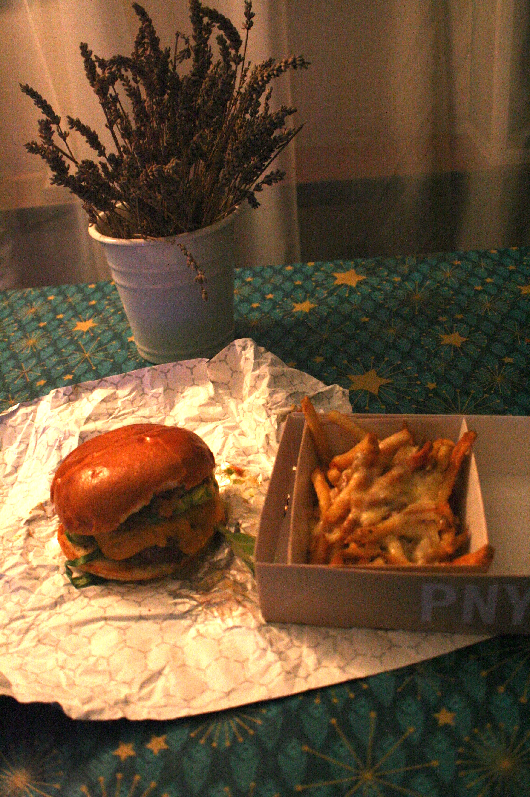
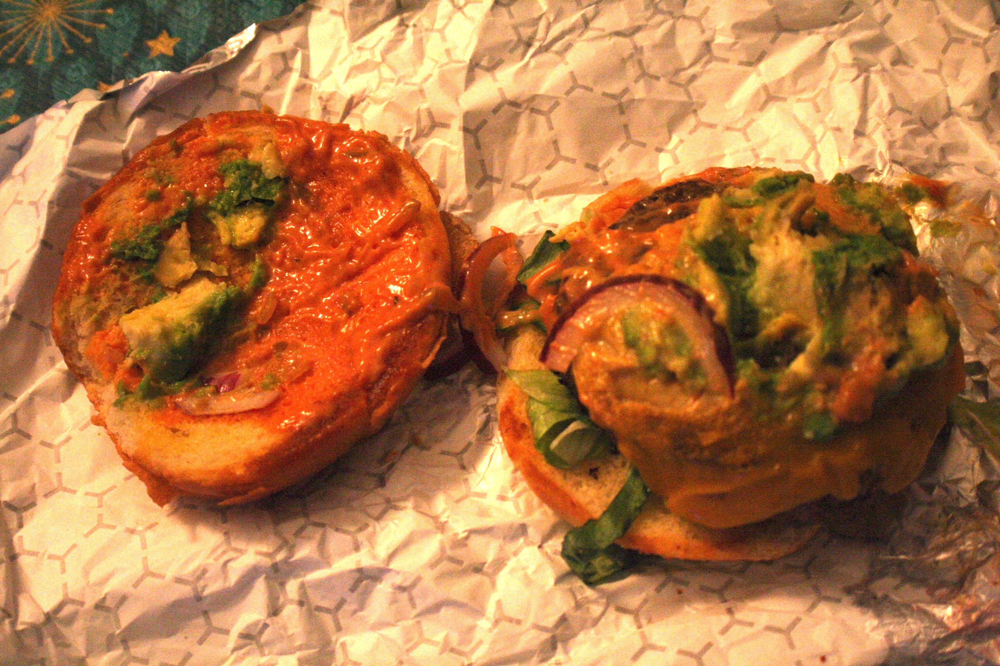

Premier article fooding pour le Blog du Chabbat, c'est ainsi que commence mon aventure pour trouver le meilleur burger de Paris.
Paris - New York : un vrai goût de burger à Oberkampf
En tout cas, c’est la promesse que nous fait le PNY, alias Paris – New York : un vrai burger à l'américaine, mais avec des produits qualitatifs.
Boeuf du Ponclet, cheddar fermier affiné pendant 9 mois, frites maisons : sur le papier, le PNY a tout pour réussir un burger de qualité.
Le burger

J'ai commandé un Morning California, cheeseburger classique agrementé de confit d'oignon, d'avocat et de la sauce secrète PNY, ainsi que des "frenchies fries" avec supplément cheddar.
Le bun brioché est légèrement grillé a l'intérieur, ce qui donne un peu de craquant à bouchée. De plus, la feuille de salade en dessous du steak rajoute à ce côté craquant.

La viande vient directement du Ponclet, une ferme bretonne réputée pour la qualité de ses produits, et qui fournit déjà pas mal de resto réputés.
Lors de la commande, on m'a demandé de spécifier ma cuisson: j'ai choisi à point.
Alors j'ai trouvé que le steak était encore un peu saignant, mais l'alliance avec l'avocat a fait qu'il fondait dans la bouche.

Les frites
Côté frites maintenant, PNY est plutôt un bon. Les frites sont faites maison; croustillantes, bien grillées et de bonne qualité, plutôt fines, pas trop salées, mais assez grasses.
Le supplément cheddar est la petite touche en plus. Le fromage est vraiment bon, très puissant, étant donné qu'il a été affiné pendant 9 mois.
En conclusion
Paris New York fait de très bons burgers, un peu onéreux (13€ pour le Morning California) mais la qualité et le goût sont au rendez-vous. N'hésitez pas à y goûter si vous y avez l'occasion.
Et pour économiser 2,50€ sur Deliveroo (marche également en navigation privée), voici mon lien de parrainage: http://roo.it/jeremiez0386